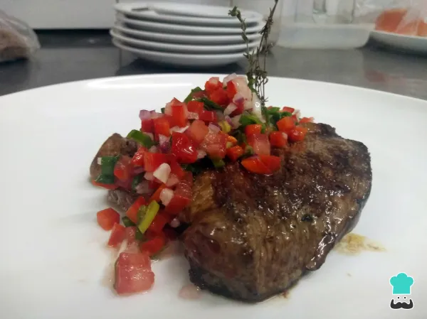

Home
Lasagna recipe

Churrasco argentino
no es más que un bife o filete de ternera o de cerdo sin hueso.
Por lo general, se prepara caliente , aunque tambien puede hacerse en la
parrilla y sobre las brasas.No es un bistec muy ancho, pues debe cortarse
aproximadamente a 2 centímetros y cocinarse "vuelta y vuelta".
Ingredients
- 1 kilogramo de ternera cortada en filetes
- 1 cebolla
- 1 pimiento rojo
- 1 cebolla de verdeo
- 1 tomate maduro
- 600 gramos de papines o patatas pequeñas pequeñas
- 30 gramos de manteca
- Tomillo
- 6 cucharadas de postre de aceite
- 2 cucharadas de postre de vinagre
- Sal
- Pimienta
Steps
- En una tabla corta la cebolla, el tomate, el pimiento rojo y la cebolla de verdeo en pequeños cubos
- Dispon todos los vegetales ya cortados en un bol y agrega el aceite, el vinagre, la sal y la pimienta. Mezcla bien y reservala salsa criolla argetnina hasta el momento de servir
- Para hacer la guarnición, pon a hervir los papines en abundante agua con un puñado de sal hasta que esten en su punto, aproximadamente unos 20 minutos. No querras que se pasen porque la piel podria romperse y a presentacion del plato se estropearia
- Una vez cocidos los papines, cuélalos y córtalos a la mitad
- Coloca u poco de aceite de oliva, manteca y tomillo en una sarten. Saltea los papines hasta que estén dorados.Salpimienta y reserva hasta que el churrasco a la plancha este listo.
- En un grill o plancha bien caliente y con aceite, coloca el filete de res y no lo muevashasta que este dorado de un lado
- Una vez pasado unos minutos del punto de la carne deseado, da la vuelta al churrasco de res y salmpimientalo al gusto
- Una vez listo el churrasco argentino, calienta las papas nuevamente y sirve. Vierte la salsa criolla sobre el churrasco y disfruta